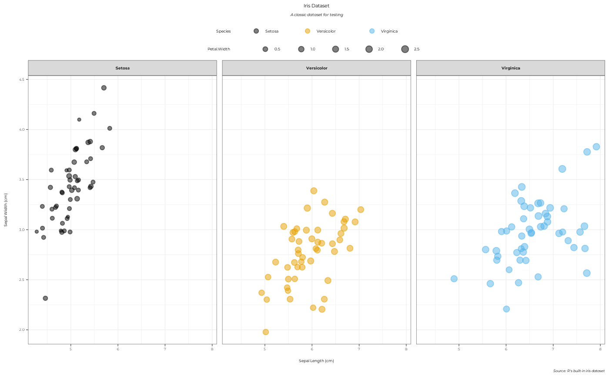
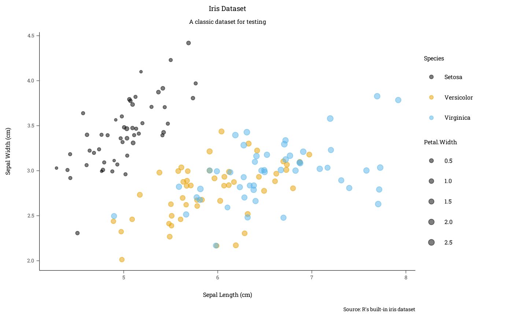

This function creates a ggplot2 theme based on the guidelines from the Nature Branded Research Journals. It takes a default ggplot2 theme as an argument and applies mostly size adjustments to the text and other elements. The option to use custom fonts from Google Fonts is also built-in, the chosen default being "Montserrat". As recommended by the NRJ, the base text size is set to 7pt and all other text sizes are inferior to 7pt. The only exception in the defaults is the title size, which should not be used in journal figures anyway. The rest of the theme was designed to make figures look good when confined into restricted spaces (88mm width for one column or 180mm for two columns).
Usage
theme_pdf(
base_theme = ggplot2::theme_classic,
family = "Montserrat",
base_size = 7,
base_line = 0.2,
title_hjust = 0.5,
axis_relative_size = 0.85,
axis_relative_x = 1,
axis_relative_y = 1,
legend_relative = 1,
...
)Arguments
- base_theme
A ggplot2 theme function, without parentheses or quotes. The default is
ggplot2::theme_classic.- family
A string with the name of the font family to be used in the theme. If not found by
sysfonts::font_add_google(), the font will reset to the default "sans" font (close to Arial).- base_size
A numeric value for the base font size in points. The default is 7pt, as recommended by the NRJ.
- base_line
A numeric value for the base line size in points. The default is 0.2pt to look good in small vector figures.
- title_hjust
A numeric value for the horizontal justification of the plot title and subtitle. The default is 0.5, which centers the title.
- axis_relative_size
A numeric value for the relative size of the axis text compared to the base size. The default is 0.85, which is slightly smaller than the base size.
- axis_relative_x, axis_relative_y
A numeric value for the relative size of the x/y-axis text compared to the axis text size (which already depends on base size). These arguments allow to dissociate the size of the x and y axes' texts. The defaults are 1.
- legend_relative
A numeric value for the relative size of the legend text compared to the base size. The default is 1.
- ...
Additional arguments passed to
ggplot2::theme()(which can override the defaults set here).
Examples
p <-
iris |>
dplyr::mutate(Species = stringr::str_to_title(Species)) |>
ggplot2::ggplot(
ggplot2::aes(
x = Sepal.Length,
y = Sepal.Width,
color = Species,
fill = Species,
size = Petal.Width
)
) +
ggplot2::geom_jitter(alpha = 0.5) +
ggplot2::labs(
title = "Iris Dataset",
subtitle = "A classic dataset for testing",
caption = "Source: R's built-in iris dataset",
x = "Sepal Length (cm)",
y = "Sepal Width (cm)"
) +
ggplot2::scale_color_manual(
values = palette.colors(palette = "Okabe-Ito")[c(1, 2, 3)]
) +
ggplot2::scale_size_continuous(range = c(1, 2.5))
p + ggplot2::facet_wrap(~ Species) + theme_pdf(ggplot2::theme_bw)

p + theme_pdf(
family = "Roboto Slab",
base_size = 12,
legend.position = "right"
)
